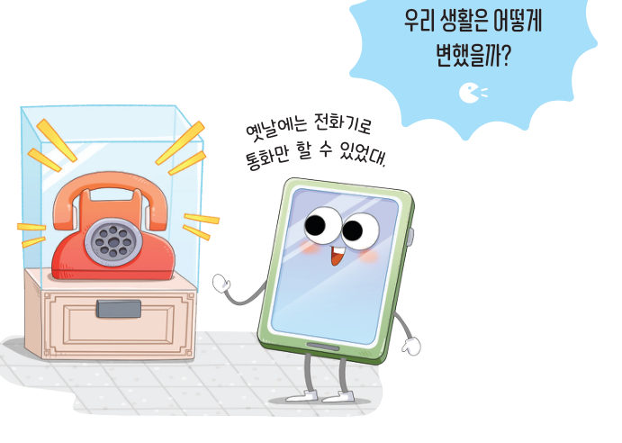
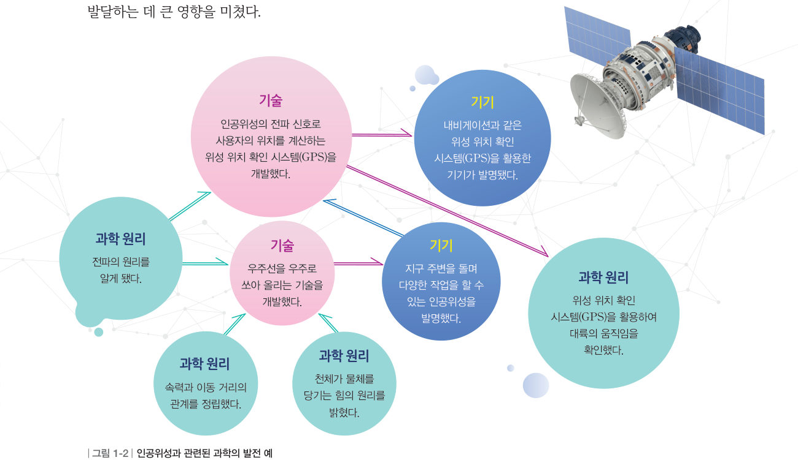
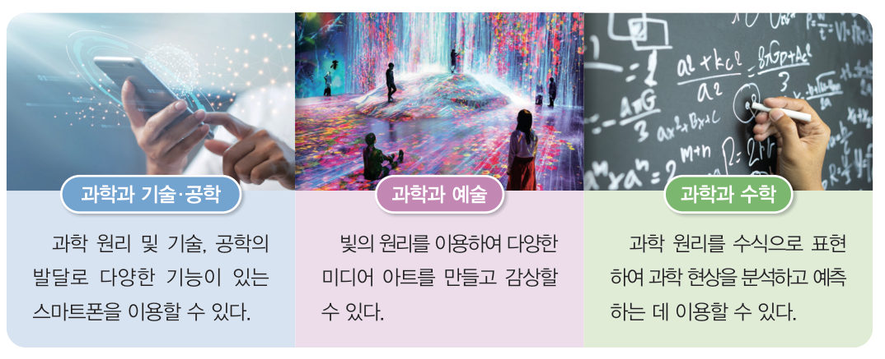
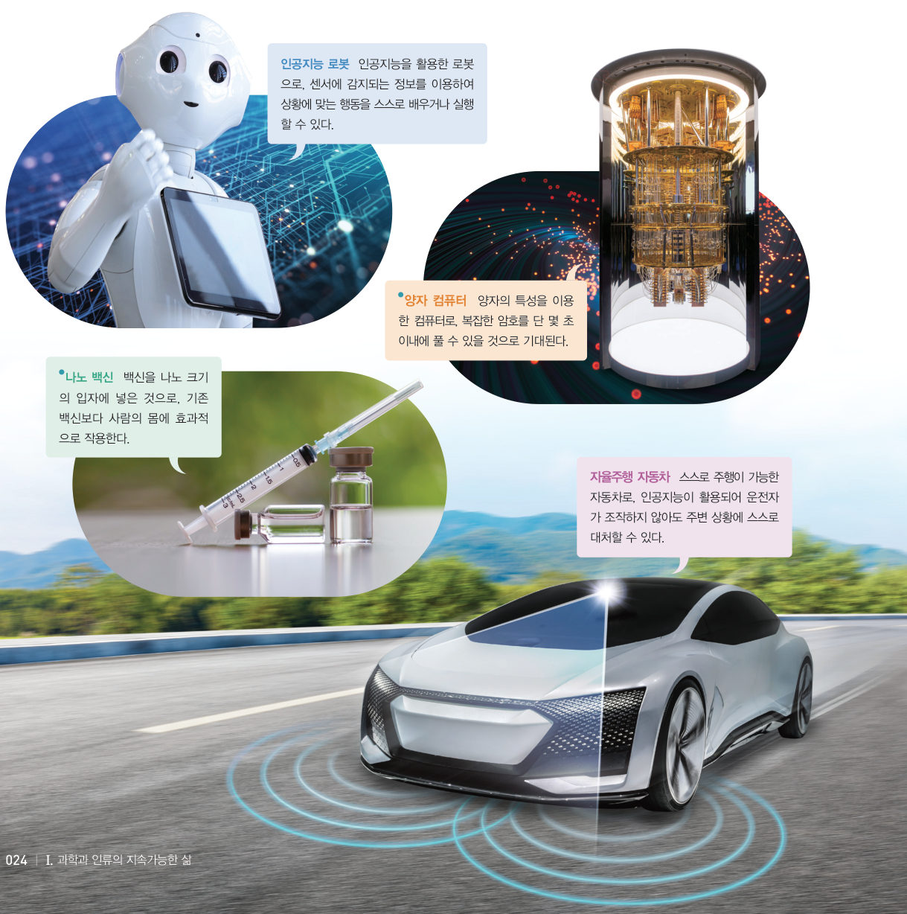
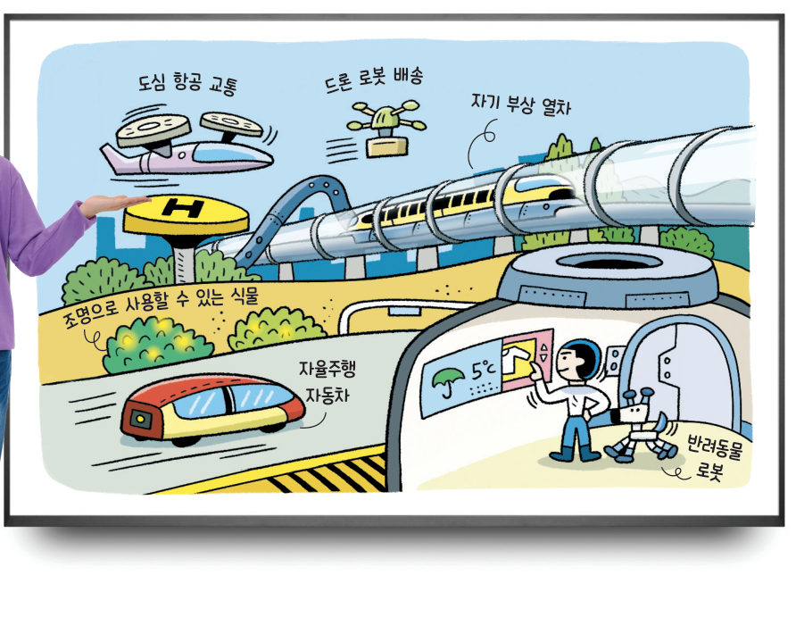

“옛날에는 전화기로 통화만 할 수 있었대.” 과학기술로 우리 생활은 어떻게 변했을까? 과학 원리·기술·기기가 이어지는 길을 따라가 보고, 가상 위성 위치 확인 시스템(GPS)으로 내 위치를 직접 찾아보자.
다양한 상황에도 얼굴만 비추면 스마트폰의 잠금이 해제되는 기능에 인공지능이 활용되고 있대. 이처럼 우리 주변에서는 첨단 과학기술을 활용한 제품을 쉽게 볼 수 있어.
과학의 발전은 인류 문명에 어떤 영향을 미쳤을까?
전화기는 소리, 자석, 전기와 관련된 과학 원리를 바탕으로 개발됐고 이후 정보 통신 기술의 발달로 현재의 스마트폰에 이르렀다. 이처럼 인류는 과학적 탐구로 발견한 과학 원리와 함께 기술을 발달시키고 기기를 발명했다.
| 사례 | 구분 | 인류 문명에 미친 영향 |
|---|---|---|
| 태양 중심설 | 과학 원리 발견 | |
| 암모니아 생산 | 기술 발달 | |
| 전동기 | 기기 발명 |
수많은 과학 원리, 기술, 기기는 그림 1-2와 같이 서로 영향을 주고받으며 발전해 왔다. 이러한 과학의 발전은 인류의 사고방식을 바꾸고, 삶을 편리하게 하며, 문명이 발달하는 데 큰 영향을 미쳤다.

| ⑴ 인공위성의 전파 신호로 사용자의 위치를 계산하는 GPS를 개발했다. | |
| ⑵ 지구 주변을 돌며 다양한 작업을 할 수 있는 인공위성을 발명했다. | |
| ⑶ 천체가 물체를 당기는 힘의 원리를 밝혔다. | |
| ⑷ 우주선을 우주로 쏘아 올리는 기술을 개발했다. | |
| ⑸ GPS를 활용하여 대륙의 움직임을 확인했다. |
한편 과학 원리는 그림 1-3과 같이 기술, 공학, 예술, 수학 등의 여러 분야와 융합한다. 과학과 다른 분야의 융합은 인류의 문명과 문화를 더 풍요롭게 한다.

첨단 과학기술로 미래 사회는 어떻게 변할까?
과학기술은 지속적으로 발달하여 현대의 첨단 과학기술에 이르렀다. 첨단 과학기술에는 대표적으로 인공지능이 있다. 인공지능은 사람의 학습 능력이 필요한 작업을 기계가 할 수 있게 한다. 인공지능을 비롯한 여러 첨단 과학기술은 그림 1-4와 같이 우리 생활 속 다양한 분야에 활용되고 있으며, 앞으로도 계속 발달할 것으로 기대된다.

| 센서에 감지되는 정보를 이용해 상황에 맞는 행동을 스스로 배우거나 실행한다. | |
| 복잡한 암호를 단 몇 초 이내에 풀 수 있을 것으로 기대된다. | |
| 기존 백신보다 사람의 몸에 효과적으로 작용한다. | |
| 운전자가 조작하지 않아도 주변 상황에 스스로 대처할 수 있다. |
| 첨단 과학기술을 활용한 예 | |
| 활용된 기술 | |
| 유용한 점 | |
| 문제점과 해결 방안 |

| 정리해 볼까 · 우리 모둠 평가 (매우 잘함 ☆, 잘함 ○, 보통 △) | 확인 |
|---|---|
| 미래 사회의 모습을 다양하고 창의적으로 예측했는가? | |
| 결과물을 이해하기 쉽고 명확하게 전달했는가? | |
| 모둠 구성원 모두가 적극적으로 참여했는가? |
인공지능은 여러 분야에 활용되어 우리 생활을 편리하게 하고 사회를 크게 변화시키고 있다. 그러나 인공지능을 활용하여 다른 사람의 개인 정보를 허락 없이 수집하거나, 저작권을 침해한 작품을 만들고, 의도적으로 가짜 그림·동영상·뉴스 등을 만들어 배포하면 심각한 사회 문제가 생길 수 있다. 인공지능을 개발하거나 활용할 때는 인간의 권리와 자유를 침해하면 안 되며, 개인의 사생활이 보호되어야 한다.
| ② 태양 중심설은 지구가 우주의 중심이라고 생각했던 인류의 생각을 바꾸는 계기가 되었다. | |
| ③ 암모니아를 합성하는 기술이 개발되어 질소 비료가 만들어져 식량 생산이 크게 감소하였다. | |
| ④ 과학의 발전은 삶을 편리하게 하고, 문명이 발달하는 데 큰 영향을 미쳤다. | |
| ⑨ 교통이 편리해져 장소를 이동하는 데 걸리는 시간이 줄어든다. | |
| ⑩ 과학기술은 사람들의 노동 시간을 늘리고 휴식 시간을 줄여 문화가 더욱 발전하게 한다. |